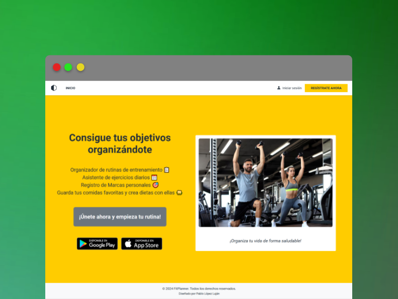
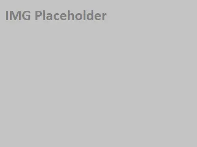

<div class="seccionProjects">
  <div class="container">
    <div class="background-wrapper">
      <div class="content">
        <div class="row d-flex justify-content-center">
          <div class="col-lg-6">
            <p class="mb-0 introTitle text-center">Descubre mis trabajos</p>
            <h1 class="text-center">Algunos de mis proyectos</h1>
            <p class="text-center">
              Estos son algunos de los proyectos que he hecho a lo largo de mi carrera como programador.
              Si quieres descubrir más, puedes echar un vistazo a mi perfil de <span>GitHub</span>, donde tengo mis
              demás repositorios.
            </p>
          </div>
        </div>
      </div>
      <div class="baseContent d-flex mt-5">
        <div class="row" style="height: 100%;">

          <!-- Perfil de Github -->
          <div class="col-lg-4 justify-content-center d-flex gitprevBloke">
            <div class="holder2 mb-5">
              <div class="gitPrev ">
                <app-gitprev></app-gitprev>
              </div>
            </div>
          </div>

          <!-- Bento Boxes -->
          <div class="col-lg-8 col-md-12">

            <!-- Proyectos visibles inicialmente -->
            <div class="projectHolder d-flex flex-lg-row flex-column mb-5">
              
              <div class="contentB px-3">
                <h2 class="mb-0">Gestor de rutinas</h2>
                <h3 class="techTag mb-3">#Front-End</h3>

                <span class="techBadge" data-bs-toggle="tooltip" title="API REST, Spring, Hibernate">
                  <i class="fa-brands fa-java me-1"></i>Java
                </span>

                <span class="techBadge" data-bs-toggle="tooltip" title="Bootstrap,HTML,Sass, Typescript">
                  <i class="fa-brands fa-angular me-1"></i>Angular
                </span>
                <p>
                  Aplicación que permite la creación y seguimiento diario de rutinas de entrenamiento y dietas.
                  Visita el readme en el código para ver todas las especificaciones. </p>
                <a href="https://github.com/pablolop12/Routine-Manager" target="_blank"
                  aria-label="Visitar repositorio de GitHub" class="tryBtn"><i
                    class="fa-solid fa-code me-1"></i>Código</a>
                <!-- <a class="tryBtn"><i class="fa-solid fa-link me-1"></i>Pruébalo</a> -->
              </div>
            </div>

            <div class="projectHolder d-flex flex-lg-row flex-column mb-5">
              
              <div class="contentB px-3">
                <h2 class="mb-0">Shortly</h2>
                <h3 class="techTag mb-3">#Full-Stack</h3>
                <span class="techBadge" data-bs-toggle="tooltip" title="API REST, Spring, Hibernate">
                  <i class="fa-brands fa-java me-1"></i>Java
                </span>

                <span class="techBadge" data-bs-toggle="tooltip" title="Bootstrap,HTML,Sass, Typescript">
                  <i class="fa-brands fa-angular me-1"></i>Angular
                </span>
                <p>
                  Proyecto web para acortar links de forma rápida y simple, sin necesidad de iniciar sesión ni
                  procedimientos
                  tediosos que alargan el proceso.
                </p>
                <a href="https://github.com/pablolop12/Shortly-URL-Shortener" target="_blank"
                  aria-label="Visitar repositorio de GitHub" class="tryBtn"><i
                    class="fa-solid fa-code me-1"></i>Código</a>
                <a href="https://shortly.pablolopezlujan.es" target="_blank" aria-label="Enlace a página de shortly" role="button" class="tryBtn"><i class="fa-solid fa-link me-1"></i>Pruébalo</a>
              </div>
            </div>

            <!-- MOSTRAR MAS OCULTO HASTA QUE ESTEN LISTOS LOS OTROS DOS PROYECTOS
             
            ##PROYECTOS
            <div class="extra-projects" [ngClass]="{'expanded': showMore}">
              <div class="projectHolder d-flex flex-lg-row flex-column mb-5">
                
                <div class="contentB px-3">
                  <h2 class="mb-0">Reto Front: Estilos de diseño</h2>
                  <h3 class="techTag mb-3">#Front-End</h3>
                  <span class="techBadge"><i class="fa-brands fa-angular me-1"></i>Angular</span>
                  <p>
                    Web con una disposición común que puede ser visualizada en distintos estilos de
                    diseño, de esta forma podemos valorar como cambia la percepción de un sitio según su interfaz.
                  </p>
                  <a class="tryBtn"><i class="fa-solid fa-code me-1"></i>Código</a>
                  <a class="tryBtn"><i class="fa-solid fa-link me-1"></i>Pruébalo</a>
                </div>
              </div>

              <div class="projectHolder d-flex flex-lg-row flex-column mb-5">
                
                <div class="contentB px-3">
                  <h2 class="mb-0">Nutritional Tracker</h2>
                  <h3 class="techTag mb-3">#Full-Stack</h3>
                  <span class="techBadge" data-bs-toggle="tooltip" title="Bootstrap,HTML,Sass, Typescript">
                    <i class="fa-brands fa-angular me-1"></i>Angular
                  </span>
                  <p>
                    Web destinada al seguimiento de los macros e ingesta calórica diaria de un usuario. El usuario crea
                    su
                    cuenta y el sistema estima unos macros objetivo diarios según sus datos.
                  </p>
                  <a class="tryBtn"><i class="fa-solid fa-code me-1"></i>Código</a>
                  <a class="tryBtn"><i class="fa-solid fa-link me-1"></i>Pruébalo</a>
                </div>
              </div>
            </div>

         ##Botón para mostrar más proyectos 
            <div class="text-center">
              <a class="textToggle" (click)="toggleShowMore()">
                {{ showMore ? 'Mostrar menos proyectos' : 'Mostrar más proyectos' }}
                <i class="fa ms-2" [ngClass]="showMore ? 'fa-chevron-up' : 'fa-chevron-down'"></i>
              </a>
            </div>
            -->

          </div>

        </div>
      </div>
    </div>
  </div>
</div>